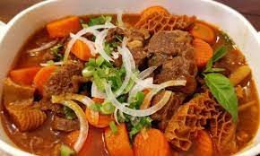

Bo Kho(Spicy Beef Stew)

Decription
Ingredients
- 1 stalk of lemongrass
- 3 tablespoons of fish sauce
- 2.5 tablespoons of grated ginger
- 2 tablespoons unsweetened applesauce
- 1.5 teaspoons of curry powder
- 1 teaspoons of Chinese five spice powder
- 1 bay leaf
- 2.5 pounds of beef brisket
- 3 tablespoons of clarified butter
- 1 onion
- salt to taste
- 3 cups of water
- 1 pound of carrots
- 1/4 cup of cilantro
Steps
- Trim ends of lemongrass and cut into 3-inch pieces.
Pound gently with a heavy objects until bruised
- Cut the beef brisket into 1 & 1/2 cubes
- Mix lemongrass stalk, fish sauce, ginger, applesauce, curry power,
five spice powder, and bay leaf in a large bowl. Add the beef and
mix until coated. Let marinate in the fridge for about 30 minutes
- Preheat the oven to 300 degree Fahrenheit(150 degree Celcius)
- Drain excess marinade off the meat and reserving lemongrass
and bay leaf
- Melt clarified butter in a Dutch oven over medium-high heat. Cook
beef in batches until browned for about 30 second per side.
- Remove the beef and cook the onion on medium-low heat until soften
- Stir in the tomatoes and simmer until thicken into a paste. Remember
to add salt to help break down the tomatoes faster
- Stir the beef, reserved lemongrass, and the bay leaf into the tomato
paste. Increase the heat to medium and cook until the flavors combine
(stir often). Increase the heat to high; adding water and carrots
- Once boil, cover and cook in the oven until the beef is tender.
Garnish with cilantro.
Credit
Check out the original recipe